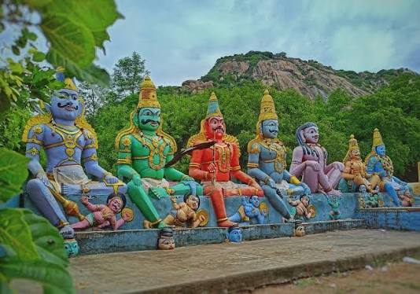
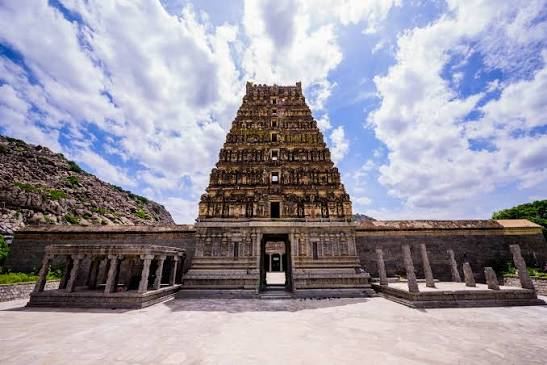
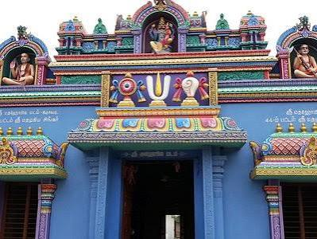
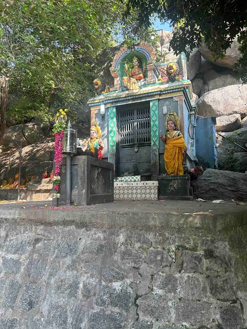

TEMPLES





TEMPLE DETAILS
The Gingee Assembly Constituency in the Villupuram district of Tamil Nadu is home to a magnificent array of ancient rock-cut, hilltop, and fortress shrines that span across the Chola, Pallava, Vijayanagara, and Nayakar eras. The spiritual landscape is anchored by iconic structures located both inside and around the famous historic citadel, such as the Vijayanagara Era Shri Venkatramana Temple, renowned for its spectacular monolithic pillars and traditional carvings, and the fortress-bound Kamalakanni Amman Temple. A short distance away lies the celebrated Arulmigu Ranganathar Temple in Singavaram, where a massive 20-foot-long deity of Lord Vishnu is carved directly out of a natural rock face inside a hilltop cave. The region also features highly revered Amman shrines, most notably the immensely popular Arulmigu Sri Angaala Paramaeswari Amman Temple in Melmalayanur, alongside the forest-bound Arulmigu Mannarswamy Shri Pachaiamman Thirukovil in Melachery and local shrines like the Sri Sorpana Magha Mariamman Temple. Shiva worship is equally prominent, represented by historical landmarks like the Shri Arunachaleswar Temple on Eswaran Kovil Street, the ancient Melacheri Sri-Sikhari-Pallaveshvaram Cave Temple, and the Shri Ekambaraswar Temple. Furthermore, the constituency highlights a diverse religious heritage through its ancient Murugan temples—such as the Arulmigu Sri Subramaniya Swamy Thirukovil—the historic Thirunathar Kundru Jain Hills cave complex, and a multitude of deeply integrated village deities including the Pudur Neganur Shri Ponniyamman Koil and the Vinayagapuram Lord Ganesh Temple